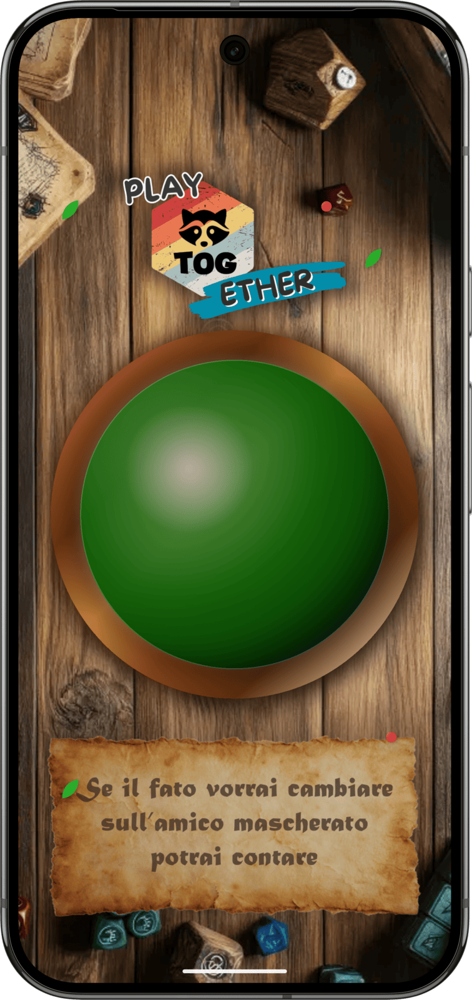

TOG (Messages) - Mobile Application
Mobile application for boardgames
Dart
Flutter
Mobile application for boardgames
TOG (Messages) — PlayToGether — solves the small ritual that opens every board-game night: deciding who goes first. Instead of rolling the highest die or arguing, the group opens the app, taps the logo, and a randomly drawn mystical verse designates the starting player.
The app carries 27 hand-written Italian messages, most of them rhymed, phrased as prophecies rather than instructions. Each one resolves at the table in seconds — the strangest socks, the lowest phone battery, the last one to cook — with no player list and no input.
The presentation makes it feel like more than a random picker: the phone runs full screen in portrait, behind a fantasy-styled background, so it reads as a prop rather than a phone.

The verse appears letter by letter, each character animated on its own, over translucent blurred glass panels while the logo drifts and rotates. Handwritten typography matches the tone of the writing.
A deliberately minimal Flutter app: a single screen with no persistence and no dependencies beyond the framework itself. All the complexity is in the animation choreography — six coordinated animation controllers — and in the writing.
Holds the message corpus, the random draw with its state transitions, and the logic that spawns and disposes one animation controller per letter of the selected verse.
Builds the single-screen UI — layered background, floating logo, glass message panel and action button — and provides the AnimationController / Tween / Transform machinery behind every effect on screen.
Locks the app to portrait orientation and enables immersive sticky mode, hiding the Android system bars so the phone reads as a game accessory on the table.
Fantasy background artwork, the PlayToGether logo and the Kalam typeface (regular and bold) ship inside the app, with graceful fallbacks if an asset is missing.